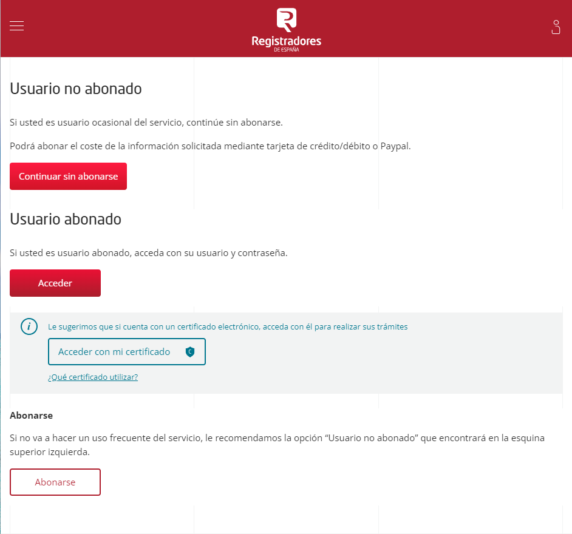
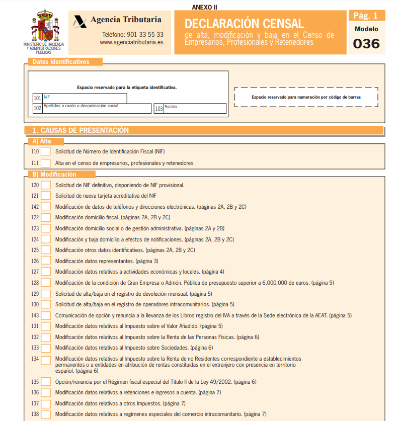
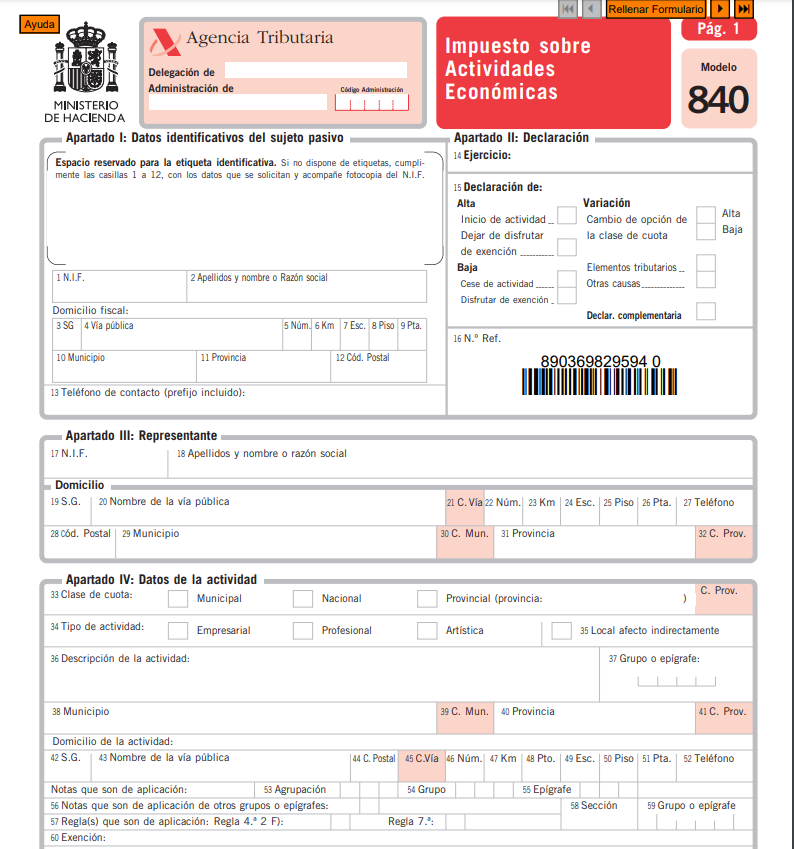

ESTATUTOS SOCIALES DE DELICIO S.L.
CAPÍTULO I: DENOMINACIÓN, OBJETO SOCIAL Y DOMICILIO
Artículo 1: La sociedad se denominará "DELICIO S.L." y se regirá por estos estatutos y las leyes aplicables.
Artículo 2: Objeto Social La sociedad tiene como objeto social: Servicio de comida a domicilio.
Artículo 3: Domicilio Social El domicilio social de la sociedad se establece en C/Camino de ronda esquina Fígares en Granada.
CAPÍTULO II: CAPITAL SOCIAL Y ACCIONES
Artículo 4: Capital Social El capital social de la sociedad es de 40000€, dividido en 10 participaciones de 4000€ cada una.
Artículo 5: Aportaciones y Clases de Acciones Las aportaciones de los socios se realizarán en euros. Se podrán emitir distintas clases de acciones con derechos y restricciones específicas, según se establezca en acuerdos de la Junta General.
CAPÍTULO III: ÓRGANOS DE ADMINISTRACIÓN Y REPRESENTACIÓN
Artículo 6: Órganos de Administración La sociedad será administrada por los socios mancomunados. Los cuales desempeñarán sus funciones de acuerdo con las leyes aplicables y estos estatutos.
Artículo 7: Representación La representación de la sociedad recae en los representantes legales de los socios, que podrán actuar individual o conjuntamente según lo establecido por la Junta General.
CAPÍTULO IV: JUNTA GENERAL DE SOCIOS
Artículo 8: Convocatoria y Quórum La Junta General se convocará de acuerdo con lo establecido por la ley y estos estatutos. El quórum para la celebración de la Junta General y la adopción de acuerdos será el establecido por la ley.
Artículo 9: Facultades de la Junta General La Junta General tendrá las facultades que le atribuye la ley y estos estatutos, incluyendo la modificación de los estatutos, la distribución de beneficios, la aprobación de cuentas anuales, entre otras.
CAPÍTULO V: DISOLUCIÓN Y LIQUIDACIÓN
Artículo 10: Causas de Disolución La sociedad se disolverá en los casos y de acuerdo con los procedimientos establecidos por la ley.
Artículo 11: Liquidación En caso de disolución, se procederá a la liquidación de la sociedad de acuerdo con las disposiciones legales aplicables.
CAPÍTULO VI: EJERCICIO SOCIAL Y CUENTAS ANUALES
Artículo 12: Ejercicio social Los ejercicios sociales comienzan el 1 de enero y finalizan el 31 de diciembre de cada año natural. Por excepción, el primer ejercicio social comprende desde el principio de las operaciones de la Sociedad hasta el 31 de diciembre de ese mismo año.
Artículo 13: Cuentas Anuales Las cuentas y el informe de gestión, así como, en su caso, su revisión por auditores de cuentas, deberán ajustarse a las normas legales y reglamentarias vigentes en cada momento. La distribución de dividendos a los socios se realizará en proporción a su participación en el capital. Los socios tienen derecho a examinar la contabilidad en los términos previstos en la Ley.
DISPOSICIONES FINALES
Artículo 14: Modificación de Estatutos Estos estatutos podrán ser modificados por acuerdo de la Junta General de Socios, de conformidad con la ley.
Artículo 15: Ley Aplicable y Jurisdicción Estos estatutos se regirán e interpretarán de acuerdo con las leyes del registro mercantil y de sociedades y cualquier controversia derivada de ellos será sometida a los tribunales de dicha jurisdicción.
CARACTERÍSTICAS DE UNA SOCIEDAD LIMITADA
1. Socios
Para crear una sociedad limitada no existe mínimo o máximo de socios. Pudiendo ser constituida por una única persona (física o jurídica), creando una sociedad limitada unipersonal, o por varias sin límite máximo.
En cuanto a la responsabilidad que asumen cada uno de ellos, esta se ve limitada al capital aportado. De este modo, no responden con su patrimonio personal de las posibles deudas de la sociedad. Los socios de una sociedad limitada pueden ser de dos clases: socios trabajadores y/o socios capitalistas. En otras palabras, un socio trabajador aporta su trabajo y habilidades a la empresa, mientras que un socio capitalista aporta capital financiero.
2. Denominación social
La denominación social de la empresa deberá ser un nombre único que no pertenezca a ninguna otra empresa. Para comprobar si está libre el nombre seleccionado se puede acceder a la web del Centro de Información y Red de Creación de Empresas (CIRCE). El nombre elegido deberá ir seguido de su forma societaria: Sociedad de Responsabilidad Limitada o sus siglas S.R.L. Sociedad Limitada o sus siglas S.L.
3. Capital social
El capital social mínimo exigido para constituir la sociedad es de 1€, desembolsado íntegramente. Así reza en el capítulo II de la Ley 18/2022, de 28 de septiembre, de creación y crecimiento de empresas: “La eliminación de la exigencia de 3.000 euros de capital social mínimo vigente hasta la fecha tiene por objeto promover la creación de empresas mediante el abaratamiento de sus costes de constitución y pretende, asimismo, ampliar las opciones de los socios fundadores respecto al capital social que desean suscribir en función de sus necesidades y preferencias.”
Esta aportación puede ser en forma monetaria o en especie, aportando bienes materiales como elementos de inmovilizado (vehículos, equipos informáticos, etc.). Eso sí, estos bienes deberán haber sido valorados con la aprobación de los socios. En cuanto a la división del capital, este se realizará mediante participaciones sociales. Su transmisión tiene limitaciones legales con el objetivo de proteger al resto de socios, contando con derecho preferente frente a terceros.
4. Domicilio Social
El domicilio de una sociedad limitada debe estar en España. Siendo lo habitual que se ubique en la misma dirección donde se establezca físicamente la sede de la empresa. En caso de querer realizar un cambio de domicilio social podrá ser aprobado por el administrador si se realiza en el mismo domicilio. Si este no fuera el caso y se quisiera cambiar de localidad, se deberá llevar a la junta de socios para su aprobación.
5. Objeto social
El objeto social es el conjunto de actividades a las que se va a dedicar la empresa. Para evitar gastos administrativos en caso de diversificar las actividades que desempeña la sociedad, es recomendable abarcar un rango amplio de actividades dentro del sector.
6. Constitución
Para la constitución de una sociedad limitada se deberán establecer unos estatutos, acudir al notario para redactar una escritura pública y acudir al registro mercantil. En los estatutos de la sociedad, regulados por la orden JUS 3185/2010 de los Estatutos tipo de la Sociedad de responsabilidad limitada, se detallarán las aportaciones de los socios, el porcentaje que representa y diversos aspectos sobre la gestión de la sociedad.
Además, en los casos que la sociedad esté compuesta por muchos socios será recomendable realizar un pacto de socios.
7. Administración y gestión
En cuanto a la administración y gestión de la sociedad, se deberá establecer en los estatutos alguna de las siguientes opciones:
- Administrador único: una sola persona será la encargada de administrar la sociedad.
- Administradores solidarios: cada uno de los socios puede tomar decisiones que afecten a la sociedad por su cuenta comprometiendo al resto.
- Administradores mancomunados: las decisiones las deben tomar previo acuerdo firmado por todos los socios.
- Consejo de administración: se designará a tres o más administradores que tomarán las decisiones que afecten a la sociedad.
En el mismo documento se deberá fijar la duración del puesto de administración, pudiendo ser indefinido. Estableciendo, en el caso que corresponda, la retribución de los mismos. Hay que tener en cuenta que las responsabilidades derivadas de la gestión de la sociedad recaerán sobre los administradores, no sobre los socios.
El máximo órgano para la toma de decisiones de la sociedad es la junta general de socios. Esta junta se convoca por los administradores todos los años (en los primeros 6 meses del año) para presentar la gestión realizada, aprobar las cuentas anuales y establecer el reparto del resultado de ejercicio.
8. Régimen Seguridad Social
Tanto los administradores como los socios que ostenten control sobre la sociedad tendrán que estar establecidos como trabajadores autónomos. Sin embargo, una de las ventajas que ofrecen las sociedades limitadas es que los socios se podrán adjudicar un sueldo o facturarle a la sociedad.
9. Legislación
Las sociedades limitadas se rigen por el Real Decreto Legislativo 1/2010, de 2 de julio, por el que se aprueba el texto refundido de la Ley de Sociedades de Capital.
10. Obligaciones fiscales
Están obligadas a tributar por los mismos impuestos que el resto de sociedades: el impuesto de sociedades (IS) y el Impuesto sobre el Valor Añadido (IVA). Una sociedad limitada presenta ventajas con respecto a los autónomos gracias a un tipo de gravamen más bajo y mayor posibilidad de aplicar gastos deducibles en el impuesto de sociedades.
TRÁMITES A SEGUIR
1. Registra el nombre de la SL
Organismo: Registro mercantil Este trámite consiste en registrar un
nombre único que no coincida con otra sociedad ya establecida.
Para ello, debes hacer una solicitud de certificado a través de la
web del Registro Mercantil. En este documento deberás incluir cinco
posibles nombres para la nueva SL. Mientras realizas la solicitud te
informarán si alguno de esos cinco nombres no estuviera disponible.
Cuando te hayan concedido el certificado, tendrás el nombre
reservado 6 meses. Aun así, debes saber que el certificado
únicamente tiene una validez de tres meses para el registro ante
notario. Si excedes el plazo, tendrás que volver a solicitarlo.
Debes acceder como usuario (abonado o no) para la solicitud del certificado. https://sede.registradores.org/site/acceso
2. Abrir una cuenta bancaria a nombre de la sociedad
Una vez que hayas conseguido el certificado de registro, el siguiente paso será abrir una cuenta bancaria a nombre de la nueva Sociedad Limitada. Es un paso imprescindible, ya que en esa cuenta deberás ingresar el Capital Mínimo Inicial, que en la actualidad es de solo un euro (hasta hace poco era de 3.000,06 euros).
Al ingresar el capital, el banco te entregará un certificado del ingreso, que deberás presentar en notaría para poder crear la Sociedad Limitada. Eso sí, debes tener en cuenta que deberás reservar un 20% de los beneficios de la sociedad hasta alcanzar los 3.000,06 euros de capital mínimo vigentes hasta ahora.
3. Redacta los estatutos
Este paso consiste en redactar los Estatutos Sociales de la SL, el conjunto de normas por las que se regirá la empresa. Este documento se añadirá posteriormente a la Escritura Pública de Constitución.
Los Estatutos Sociales de una Sociedad Limitada deben tener un mínimo de información, entre la que se encuentran:
- Modalidad de Sociedad de Responsabilidad Limitada.
- Objeto social o actividad que realizará la sociedad.
- Denominación y domicilio social de la Sociedad.
- Fecha de cierre de cada ejercicio.
- Participaciones en que se divide; valor nominal de cada participación y numeración de las mismas.
- Sistema de administración de la sociedad.
4. Escritura de Constitución de la nueva Sociedad Limitada
En cuanto a la Escritura de Constitución de la Sociedad Limitada, se debe formalizar por todos los socios ante notario. Para ello, los socios deben presentar en la notaría con la siguiente documentación:
- Certificación del Registro Mercantil Central.
- Estatutos Sociales.
- DNI original de cada socio fundador de la SL.
- En caso de ser extranjero deberá aportar la declaración de inversiones exteriores.
- Certificado de la Entidad Bancaria.
5. Obtención del NIF (Número de Identificación Fiscal)
Organismo: Hacienda Una vez que hayas realizado la firma de la escritura deberás conseguir el NIF en Hacienda. Te facilitarán un Número de Identificación Fiscal provisional. Además te otorgarán las etiquetas y tarjetas de identificación de la SL.
Para ello necesitarás la siguiente documentación:
- Fotocopia de la escritura de constitución de la sociedad.
- Fotocopia del DNI del firmante.
- Modelo 036 cumplimentado.
Llegados a este punto, cabe destacar que este NIF únicamente tiene una validez de seis meses y que, superado ese plazo, deberás cambiarlo por uno definitivo.
6. Alta en Impuesto de Actividades Económicas
El trámite de alta en el IAE, por sus siglas Impuesto de Actividades Económicas, se realiza presentando el modelo 840 junto con el NIF en la Administración Tributaria correspondiente al lugar donde se ejerce la actividad económica.
En el caso de aquellos supuestos exentos del IAE, es decir para quienes tengan una cifra de negocio inferior a 1.000.000 euros al año, sólo es necesario aportar el modelo 036 de la Declaración Censal indicando los epígrafes IAE a los que se acoge.
7. Declaración del IVA
Organismo: Hacienda La declaración de IVA se realiza en Hacienda para determinar el comienzo de la actividad económica. Para este trámite es necesario presentar el Modelo 036, el NIF provisional y el documento del IAE, sólo en caso de ser necesario.
En el caso de que surjan modificaciones o cese la actividad de la sociedad, también será necesario hacer esta presentación.
8. Inscripción en el Registro Mercantil
Organismo: Registro mercantil La inscripción en el Registro Mercantil debe realizarse por parte de todos los integrantes de la SL en el Registro Mercantil de la provincia donde está fijado el domicilio social.
Para hacer la inscripción en el Registro Mercantil de la SL se debe presentar:
- Copia del NIF provisional.
- Copia autorizada de la Escritura de Constitución de la Sociedad Limitada.
9. Obtención del NIF definitivo
Organismo: Hacienda Cuando se realicen los pasos anteriores deberás obtener el NIF definitivo en Hacienda. Con todos los trámites terminados se constituirá la nueva sociedad limitada.
Para comenzar a ejercer tu actividad económica ya solo queda que cumplas con las obligaciones de la SL con la Seguridad Social y el Ayuntamiento del lugar en el que esté fijada la dirección social de tu empresa; como por ejemplo darse de alta en el Régimen Especial de Trabajadores Autónomos.
 Bibliografía:
Pasos para crear una SL: https://www.autonomosyemprendedor.es/articulo/guias-de-emprendimiento/como-crear-sociedad-limitada-guia-paso-paso/20230609135724030875.html